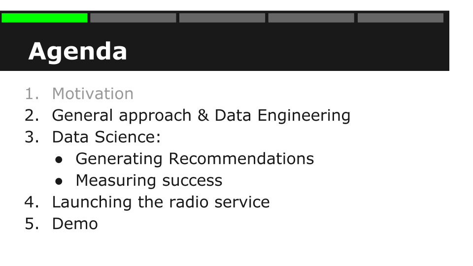

What is DSR
“Data Science Retreat is a data science bootcamp that brings together top data scientists and mentees seeking to grow an exceptionally amount quickly.” (datascienceretreat.com) The curriculum covers a variety of topics that stretch from formulating the analytical problem, getting data, finding insights, making predictions, data at scale to solid implementation practices and software engineering. My two personal favourite gems in the program were big data machine learning with Apache Spark as well as Deep Learning for Image processing using Theano. We did all the modeling in R and Python.
Motivation
As a portfolio project I have decided to build a music player similar to Pandora that focusses on electronic music in Berlin. I am using the Soundcloud API to display and play music:
I have structured this blog post into 5 five parts:

First I am describing the general approach, the data gathering & engineering. Then in the main part I will talk about ways to generating music recommendations since playlist generation is essentially a recommendations problem. We will measure success of different approaches and then we’ll play some music. [...] https://docs.google.com/presentation/d/1CWKiGIhLbSvR-5mZW0dKA9ZDAQQiIvaLnpIVpC7Vvak/edit?usp=sharing